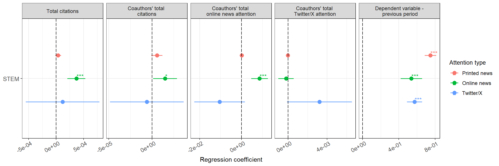
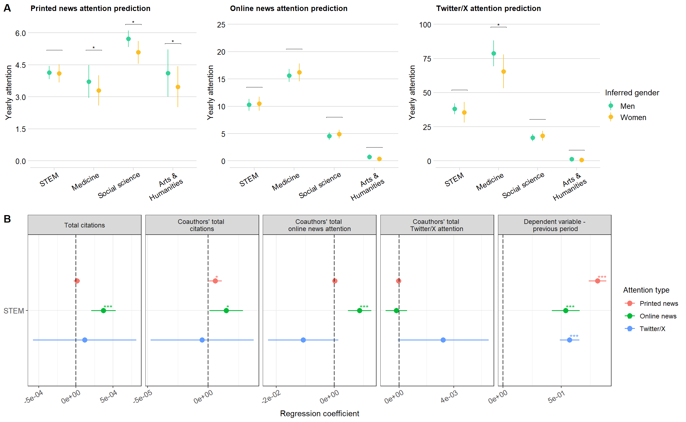
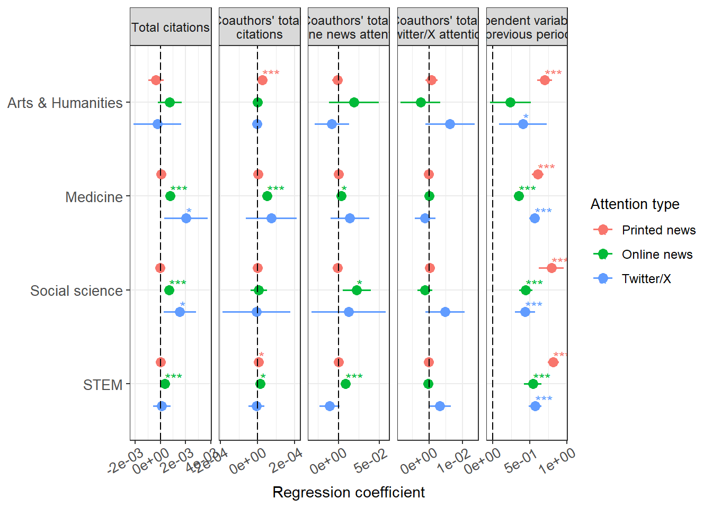

3.1 Main models
See “helper_functions.R” for details on the function we use to fit the models.
This function returns a list containing:
- the model coefficients
- the prediction per gender
- pairwise testing of significance of predictions for men and women
We then use this output to plot our results and output the final model tables.
3.1.1 News attention
News attention models, per field, controlling for: - last time period’s news - total citations received up to the last period - total online attention received up to the last period - total twitter attention received up to the last period - total citations received by all coauthors up to the last period - online attention received by all coauthors up to the last period - twitter attention received by all coauthors up to the last period - year control Individual clustered SE. Models ran per each field separately.
news_formula_main_model <- "news_all ~ inferred_gender + news_all_l + cited_by_total_all_l + alt_online_all_total_l + alt_twitter_total_l +coa_tot_cited_by_total_l + coa_tot_online_all_total_l + coa_tot_twitter_total_l+years_since_first_pub + as.factor(year)"
news_main_model <- lm_fitter_cl_robust(panel_dataset = prof_panel_filter,
lm_formula = news_formula_main_model,
year_cutoff_upper = 2023,
year_cutoff_lower = 2012)Plot gender differences:
# use the pairwise comparisons to compare groups in the plot
p_values <- news_main_model[[3]]
# manually add some elements we need to everything to look good
p_values$x <- c(1, 2, 3, 4)
p_values$groups <- 'c("m", "w")'
p_values$xmin <- c(0.8, 1.8, 2.8, 3.8)
p_values$xmax <- c(1.2, 2.2, 3.2, 4.2)
predictions_plot <- news_main_model[[2]]
news_gender_plot <- predictions_plot %>%
ggplot(aes(x = field,
y = predicted,
ymin = conf.low,
ymax = conf.high,
color = x)) +
geom_pointrange(position = position_dodge(width = 0.5),
size = 0.5)+
ggtitle("Printed news attention prediction")+
scale_y_continuous(limits = c(0, 10), breaks = seq(0, 10, by = 2))+
stat_pvalue_manual(
p_values,
y.position = c(6.4, 7.5, 10, 6.9),
label.size = 3,
tip.length = 0.003,
label = "{stars}",
remove.bracket = FALSE,
)+
xlab("Field")+
scale_x_discrete(labels=c("arts" = "Arts and\n Humanities",
"medicine" = "Medicine",
"soc_sci" = "Social sciences",
"stem" = "STEM"))+
ylab("Yearly attention")+
labs(color = "Inferred gender")+
scale_color_manual(values = c("#34d399", "#fbbf24"), labels = c("Men", "Women"))+
theme_minimal_hgrid()+
theme(plot.title = element_text(size = 10),
axis.text.y = element_text(size = 10),
axis.title.y = element_text(size = 11),
axis.text.x = element_text(size = 10, angle = 30, hjust = 0.9) ,
axis.title.x = element_text(size = 11),
legend.title=element_text(size=11),
legend.text=element_text(size=10))3.1.2 Online news attention
Online news attention models, per field, controlling for: - last time period’s online news news - total citations received up to the last period - total news attention received up to the last period - total twitter attention received up to the last period - total citations received by all coauthors up to the last period - online attention received by all coauthors up to the last period - twitter attention received by all coauthors up to the last period - year control Individual clustered SE.
online_news_formula_main_model <- "alt_online_all ~ inferred_gender + alt_online_all_l + cited_by_total_all_l + news_all_total_l + alt_twitter_total_l +coa_tot_cited_by_total_l + coa_tot_online_all_total_l + coa_tot_twitter_total_l+years_since_first_pub + as.factor(year)"
online_news_main_model <- lm_fitter_cl_robust(panel_dataset = prof_panel_filter,
lm_formula = online_news_formula_main_model,
year_cutoff_upper = 2023,
year_cutoff_lower = 1973)Plot gender differences:
# use the pairwise comparisons to compare groups in the plot
p_values <- online_news_main_model[[3]]
# manually add some elements we need to everything to look good
p_values$x <- c(1, 2, 3, 4)
p_values$groups <- 'c("m", "w")'
p_values$xmin <- c(0.8, 1.8, 2.8, 3.8)
p_values$xmax <- c(1.2, 2.2, 3.2, 4.2)
predictions_plot <- online_news_main_model[[2]]
online_news_gender_plot <- predictions_plot %>%
ggplot(aes(x = field,
y = predicted,
ymin = conf.low,
ymax = conf.high,
color = x)) +
geom_pointrange(position = position_dodge(width = 0.5),
size = 0.5)+
ggtitle("Online news attention prediction")+
scale_y_continuous(limits = c(0, 25), breaks = seq(0, 25, by = 5))+
stat_pvalue_manual(
p_values,
y.position = c(13.5, 20.5, 8, 2.5),
label.size = 3,
tip.length = 0.003,
label = "{stars}",
remove.bracket = FALSE,
)+
xlab("Field")+
scale_x_discrete(labels=c("arts" = "Arts and\n Humanities",
"medicine" = "Medicine",
"soc_sci" = "Social sciences",
"stem" = "STEM"))+
ylab("Yearly attention")+
labs(color = "Inferred gender")+
scale_color_manual(values = c("#34d399", "#fbbf24"), labels = c("Men", "Women"))+
theme_minimal_hgrid()+
theme(plot.title = element_text(size = 10),
axis.text.y = element_text(size = 10),
axis.title.y = element_text(size = 11),
axis.text.x = element_text(size = 10, angle = 30, hjust = 0.9) ,
axis.title.x = element_text(size = 11),
legend.title=element_text(size=11),
legend.text=element_text(size=10))3.1.3 Twitter/X attention
Twitter/X attention models, per field, controlling for: - last time period’s twitter attention - total citations received up to the last period - total online attention received up to the last period - total news attention received up to the last period - total citations received by all coauthors up to the last period - online attention received by all coauthors up to the last period - twitter attention received by all coauthors up to the last period - year control Individual clustered SE.
twitter_formula_main_model <- "alt_twitter ~ inferred_gender + alt_twitter_l + cited_by_total_all_l + news_all_total_l + alt_online_all_total_l +coa_tot_cited_by_total_l + coa_tot_online_all_total_l + coa_tot_twitter_total_l+years_since_first_pub + as.factor(year)"
twitter_main_model <- lm_fitter_cl_robust(panel_dataset = prof_panel_filter,
lm_formula = twitter_formula_main_model,
year_cutoff_upper = 2023,
year_cutoff_lower = 1973)Plot gender differences:
# use the pairwise comparisons to compare groups in the plot
p_values <- twitter_main_model[[3]]
# manually add some elements we need to everything to look good
p_values$x <- c(1, 2, 3, 4)
p_values$groups <- 'c("m", "w")'
p_values$xmin <- c(0.8, 1.8, 2.8, 3.8)
p_values$xmax <- c(1.2, 2.2, 3.2, 4.2)
predictions_plot <- twitter_main_model[[2]]
twitter_gender_plot <- predictions_plot %>%
ggplot(aes(x = field,
y = predicted,
ymin = conf.low,
ymax = conf.high,
color = x)) +
geom_pointrange(position = position_dodge(width = 0.5),
size = 0.5)+
#ylim(2, 5.5)+
scale_y_continuous(limits = c(0, 100), breaks = seq(0, 100, by = 25))+
ggtitle("Twitter/X attention prediction")+
stat_pvalue_manual(
p_values,
y.position = c(50, 92, 28, 8),
label.size = 3,
tip.length = 0.003,
label = "{stars}",
remove.bracket = FALSE,
)+
xlab("Field")+
scale_x_discrete(labels=c("arts" = "Arts and\n Humanities",
"medicine" = "Medicine",
"soc_sci" = "Social sciences",
"stem" = "STEM"))+
ylab("Yearly attention")+
labs(color = "Inferred gender")+
scale_color_manual(values = c("#34d399", "#fbbf24"), labels = c("Men", "Women"))+
theme_minimal_hgrid()+
theme(plot.title = element_text(size = 10),
axis.text.y = element_text(size = 10),
axis.title.y = element_text(size = 11),
axis.text.x = element_text(size = 10, angle = 30, hjust = 0.9) ,
axis.title.x = element_text(size = 11),
legend.title=element_text(size=11),
legend.text=element_text(size=10))3.1.4 Combined plots
Combine this all to plot the coefficients in one plot.
First, prepare the dataframe:
model_news <- news_main_model[[1]]
model_online_news <- online_news_main_model[[1]]
model_twitter <- twitter_main_model[[1]]
model_news$model <- "News attention"
model_online_news$model <- "Online news attention"
model_twitter$model <- "Twitter attention"
all_models_plot <- rbind(model_news,
model_online_news,
model_twitter)
# do the t-1 of dependent as a single variable
all_models_plot$term <- ifelse(all_models_plot$term %in% c("news_all_l",
"alt_online_all_l",
"alt_twitter_l"),
"t_min_1",
all_models_plot$term)
all_models_plot$term <- ordered(all_models_plot$term,
levels = c("(Intercept)",
"inferred_genderw",
"t_min_1",
"cited_by_total_all_l",
"news_all_total_l",
"alt_online_all_total_l",
"alt_twitter_total_l",
"coa_tot_cited_by_total_l",
"coa_tot_online_all_total_l",
"coa_tot_twitter_total_l",
"years_since_first_pub",
"as.factor(year)2014",
"as.factor(year)2015",
"as.factor(year)2016",
"as.factor(year)2017",
"as.factor(year)2018",
"as.factor(year)2019",
"as.factor(year)2020",
"as.factor(year)2021",
"as.factor(year)2022",
"as.factor(year)2023",
"R^2"))
all_models_plot$model <- ordered(all_models_plot$model,
levels = c("News attention",
"Online news attention",
"Twitter attention" ))
all_models_plot$field <- ordered(all_models_plot$field,
levels = c("stem",
"soc_sci",
"medicine",
"arts"))
covariate_names <- c(
't_min_1' = "Dependent variable -\n previous period",
'news_all_l'="News attention -\nprevious period",
'alt_online_all_l' = "Online news attention -\nprevious period",
'alt_twitter_l' = "Twitter attention -\nprevious period",
'cited_by_total_all_l'="Total citations",
'news_all_total_l'="Total printed news \nattention",
'alt_online_all_total_l'="Total online news\n attention",
'alt_twitter_total_l'="Total Twitter/X \nattention",
'coa_tot_cited_by_total_l' = "Coauthors' total \ncitations",
'coa_tot_online_all_total_l' = "Coauthors' total \nonline news attention",
'coa_tot_twitter_total_l' = "Coauthors' total \nTwitter/X attention"
)legend <- get_legend(
# create some space to the left of the legend
news_gender_plot
)
combi_plot_regression_pred <- plot_grid(news_gender_plot + theme(legend.position="none", axis.title.x = element_blank()),
online_news_gender_plot + theme(legend.position="none", axis.title.x = element_blank()),
twitter_gender_plot + theme(legend.position="none", axis.title.x = element_blank()),
legend,
ncol = 4,
align = 'h',
axis = 'tb',
rel_widths = c(1, 1, 1, 0.4))Plot out selected regression coefficients for STEM:
# reorder the factor for Figure 2
all_models_plot$term <- ordered(all_models_plot$term,
levels = c("(Intercept)",
"inferred_genderw",
"cited_by_total_all_l",
"news_all_total_l",
"alt_online_all_total_l",
"alt_twitter_total_l",
"coa_tot_cited_by_total_l",
"coa_tot_online_all_total_l",
"coa_tot_twitter_total_l",
"t_min_1",
"as.factor(year)2014",
"as.factor(year)2015",
"as.factor(year)2016",
"as.factor(year)2017",
"as.factor(year)2018",
"as.factor(year)2019",
"as.factor(year)2020",
"as.factor(year)2021",
"as.factor(year)2022",
"as.factor(year)2023",
"R^2"))
(selected_plot <- all_models_plot %>%
filter(term %in% c("cited_by_total_all_l",
"coa_tot_cited_by_total_l",
"coa_tot_online_all_total_l",
"coa_tot_twitter_total_l",
"t_min_1") & field == "stem") %>%
ggplot(aes(Estimate, field, color = model, label = stars)) +
geom_point(position = position_dodge(width = -0.7), size = 3) +
geom_errorbar(aes(xmin = lower_ci, xmax = upper_ci),
width=0,
size=0.7,
position = position_dodge(width = -0.7)) +
geom_text(hjust=0, vjust=0, position = position_dodge(width = -0.7), size = 3.5)+
scale_y_discrete(labels=c("arts" = "Arts and Humanities",
"medicine" = "Medicine",
"soc_sci" = "Social sciences",
"stem" = "STEM"),
name = "Field")+
scale_color_manual(labels = c("Printed news", "Online news", "Twitter/X"), values = c("#F8766D", "#00BA38", "#619CFF"))+
scale_x_continuous(
n.breaks = 3,
labels = function(x) format(x, scientific = TRUE))+
# add in a dotted line at zero
labs(
x = "Regression coefficient",
y = NULL,
color = "Attention type"
) +
geom_vline(xintercept = 0, colour="black", linetype = "longdash")+
facet_wrap( ~ term, scales="free_x", labeller = as_labeller(covariate_names), ncol = 5)+
theme_bw()+
theme(plot.title = element_text(size = 10),
axis.text.y = element_text(size = 10),
axis.title.y = element_blank(),
axis.text.x = element_text(size = 10, angle = 30, hjust = 0.9) ,
axis.title.x = element_text(size = 11),
legend.title=element_text(size=10),
legend.text=element_text(size=9),
strip.text.x=element_text(size = 9)))
combi_plot_regression <- plot_grid(
combi_plot_regression_pred,
selected_plot,
ncol = 1,
nrow = 2,
axis = 'lr',
labels = c("A", "B")
)
combi_plot_regression
ggsave2(
filename = "results/main/Figure_2.png",
plot = combi_plot_regression,
width = 11,
height = 6,
units = c("in"),
dpi = 600,
bg = "white"
)And plot out the coefficients for all fields:
(all_fields_plot <- all_models_plot %>%
filter(term %in% c("cited_by_total_all_l",
"coa_tot_cited_by_total_l",
"coa_tot_online_all_total_l",
"coa_tot_twitter_total_l",
"t_min_1")) %>%
ggplot(aes(Estimate, field, color = model, label = stars)) +
geom_point(position = position_dodge(width = -0.7), size = 3) +
geom_errorbar(aes(xmin = lower_ci, xmax = upper_ci),
width=0,
size=0.7,
position = position_dodge(width = -0.7)) +
geom_text(hjust=0, vjust=0, position = position_dodge(width = -0.7), size = 3.5)+
scale_y_discrete(labels=c("arts" = "Arts and Humanities",
"medicine" = "Medicine",
"soc_sci" = "Social sciences",
"stem" = "STEM"),
name = "Field")+
scale_color_manual(labels = c("Printed news", "Online news", "Twitter/X"), values = c("#F8766D", "#00BA38", "#619CFF"))+
scale_x_continuous(
n.breaks = 3,
labels = function(x) format(x, scientific = TRUE))+
# add in a dotted line at zero
labs(
x = "Regression coefficient",
y = NULL,
color = "Attention type"
) +
geom_vline(xintercept = 0, colour="black", linetype = "longdash")+
facet_wrap( ~ term, scales="free_x", labeller = as_labeller(covariate_names), ncol = 5)+
theme_bw()+
theme(plot.title = element_text(size = 10),
axis.text.y = element_text(size = 10),
axis.title.y = element_blank(),
axis.text.x = element_text(size = 10, angle = 30, hjust = 0.9) ,
axis.title.x = element_text(size = 11),
legend.title=element_text(size=10),
legend.text=element_text(size=9),
strip.text.x=element_text(size = 9)))
ggsave2(
filename = "results/supplement_figures/Figure_2B_all_fields.png",
plot = all_fields_plot,
width = 12,
height = 4,
units = c("in"),
dpi = 600,
bg = "white"
)Print out the results into a table:
options(scipen=999)
table_models <- neat_regression_table(news_main_model[[1]],
online_news_main_model[[1]],
twitter_main_model[[1]])
table_models_save <- table_models %>%
regulartable() %>%
autofit()
word_document_name <-
read_docx() %>%
body_add_flextable(table_models_save) %>%
print(target = "results/supplement_tables/main_model_table.docx")